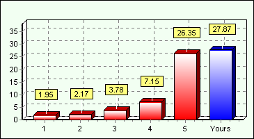

| Read speed | 27.87 MB/s | |
| Time elapsed | 20 second | |
| Bytes read | 557 MB | |
| Last Benchmark | Martes, Oct 30, 2007 12:03 pm |
|
|
| CD-ROM Bench Result for D:/ [K3b data project] | |||||||||||||||||||||
|
| Read Speed Comparison | ||
|  | 1. Lite-On 52x 2. Samsung 52x 3. Asus CD 52x 4. Creative RW 4x2x24 5. JVC Lite-On It 16x DVD-ROM |